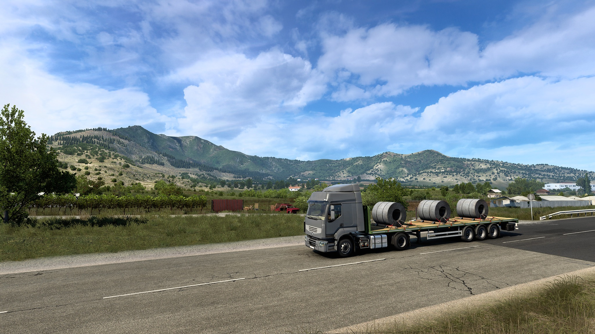

Üdvözöljük az Euro Truck Simulator 2 világában! Ez a szimulátor játék lehetővé teszi, hogy átélhesd
a teherautó-szakma izgalmas világát, miközben Európa számos országában utazol át.
Kihívások és Feladatok
Az Euro Truck Simulator 2 valósághű grafikával és részletes járművekkel
rendelkezik, amelyek lehetővé teszik, hogy érezd a teherautók vezetésének kihívásait. A játék
során számos feladattal találkozol majd, beleértve a rakományok szállítását, az
ügyfélkapcsolatok kezelését és az autók fejlesztését is.